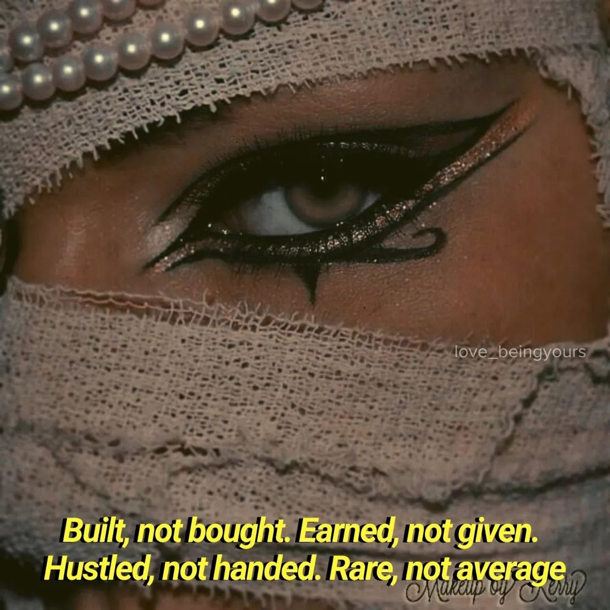

Group sessions for festivals and host organizations that want a clear educational format.

Teaching
Warm mentorship with real structure.
The teaching route is softer in tone, but not softer in standards. It is for students, organizers, and festivals who want access to technique, presence, and lived professional insight.
Focused one-to-one or small-group sessions shaped around technical and artistic goals.
Longer guidance around performance presence, discipline, and building a stronger artistic path.

Teaching tone
Transmission without losing elegance.
Teaching on this site should not feel like a mass offer. It should feel personal, warm, and structured, with enough space for both discipline and human connection.
Best for workshop hosts, private students, festival organizers, and mentorship requests.